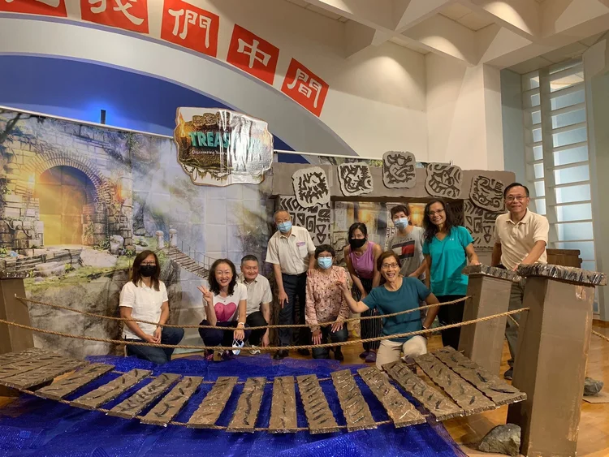
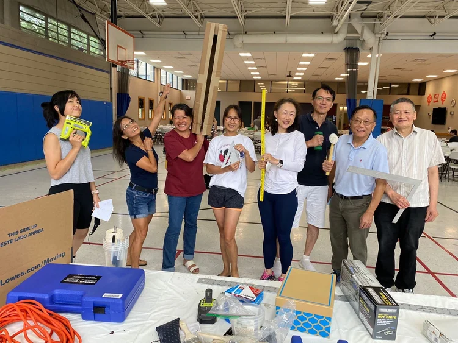
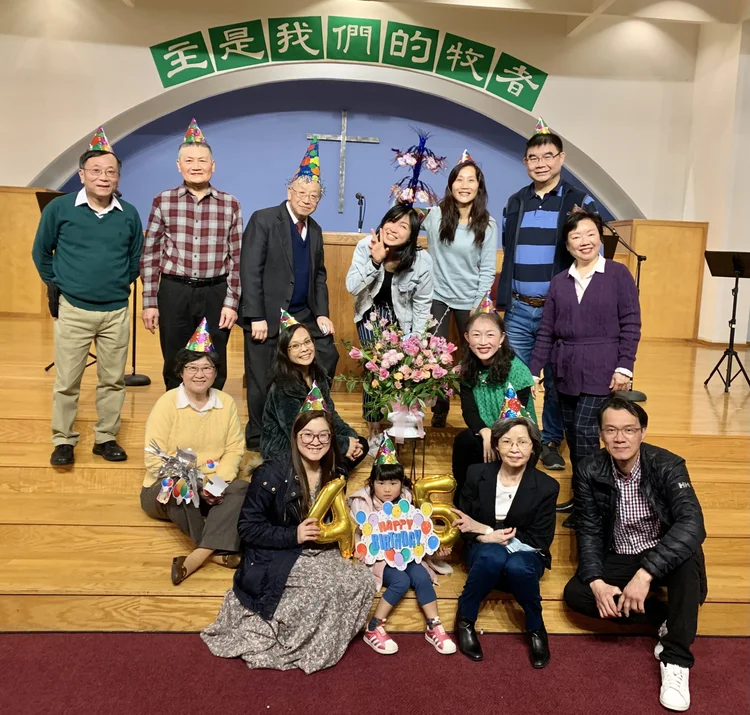
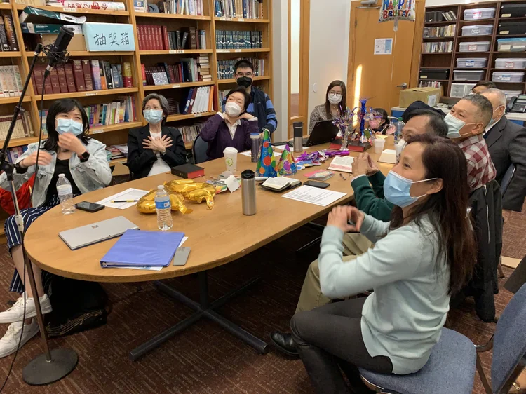

百多羅團契
Bardoro Buys Fellowship
← 返回團契列表 Back to Ministries
百多羅團契
Bardoro Buys Fellowship
百多羅團契是一個以粵語為主、成員相對年輕的團契。成員分佈在羅德島及鄰近的麻薩諸塞州各地。我們透過主題分享、詩歌、讀經、代禱和定期的團契活動聚集，學習和實踐主耶穌的愛，追求真理，廣傳福音。
Bartholomew Fellowship is a Cantonese-speaking fellowship with a relatively young membership. Members are scattered throughout Rhode Island and neighboring Massachusetts. We meet through themes, hymns, Bible reading, intercessory prayer, and regular fellowship activities to learn and practice the love of the Lord Jesus, pursue truth, and spread the gospel.
♥ 聚會時間：每月第三個主日下午三時三十分 ♥
♥ Meeting Time: 3:30 PM on the third Sunday of each month ♥
團契相片集
Fellowship Gallery




線上敬拜
Join Us Online
無法親自出席？線上觀看直播或隨時收看錄影。
Can't make it in person? Watch our services live or access recordings anytime.